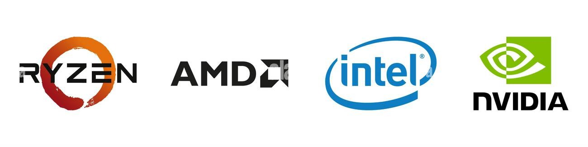

At The Tenacious Ant, we believe knowledge is power. Use these resources to better understand your hardware and maintain your system's peak performance.
Explore our curated list of tutorials on basic troubleshooting, thermal paste application, and long-term hardware maintenance to keep your rig running for years.